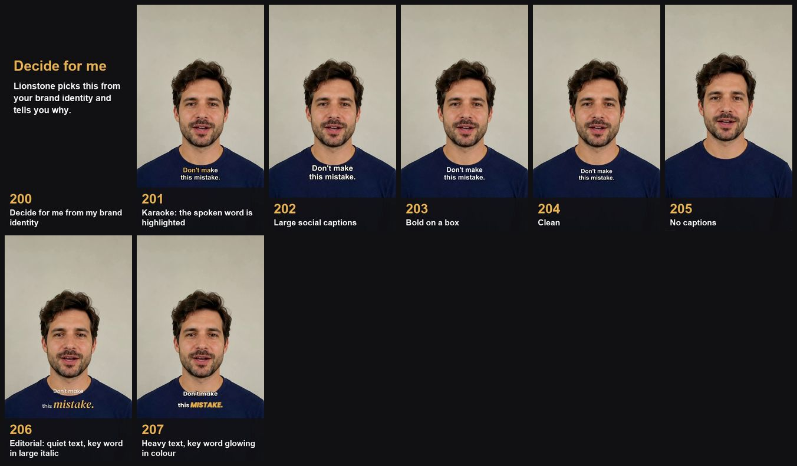
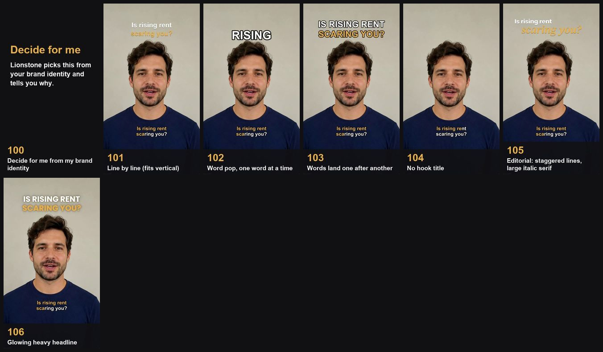
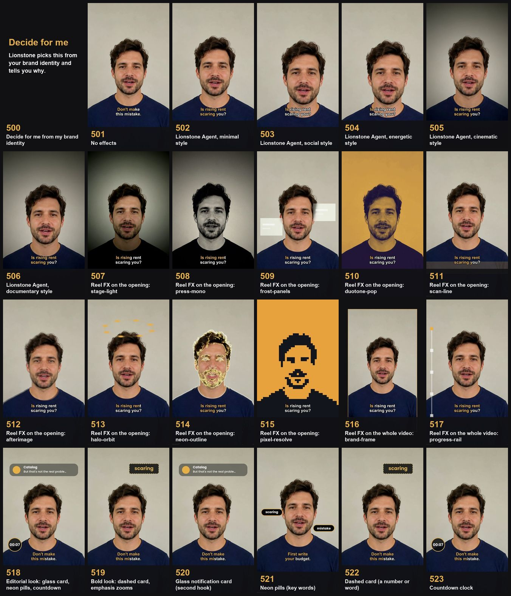
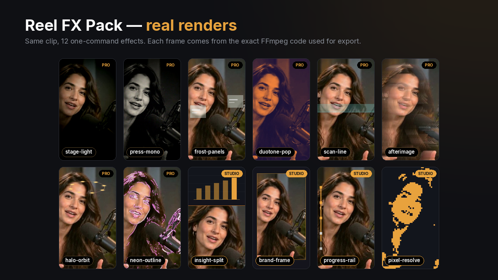
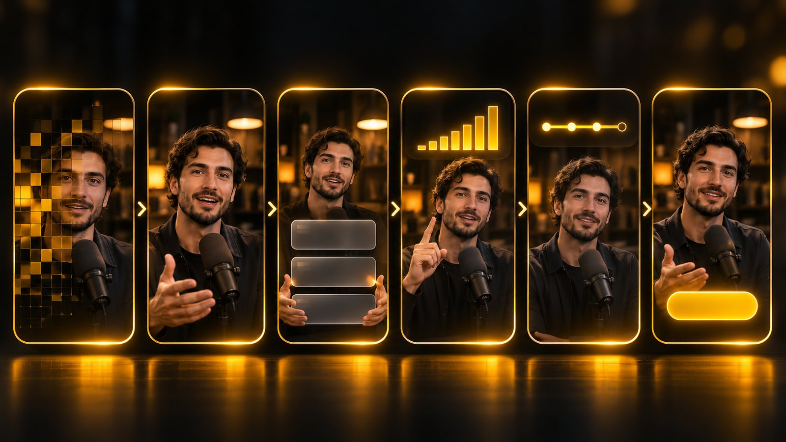

Every feature, every look, every effect, and a step-by-step guide to building a Reel with them.
How to read this handbook: chapters 1–9 explain each tool; chapter 10 puts them together in one Reel you can rebuild on your own footage. Commands are shown exactly as you type them. The illustrations are concept art; pages marked “real render” show actual Lionstone output.
Lionstone is an AI editing agent that runs on your computer. Pro and Studio used to be a paid plugin; since v0.3 every one of their features ships free in the open-source package. v0.4 adds Lionstone Reels, and v0.4.1 adds your brand identity and a visual catalogue. All of it is free: no license key, no account, no watermark, no upload.
plan.json, editing by transcript, one-command restore.| Kind | Ready | Planned |
|---|---|---|
| Looks (colour grades) | 28 | 2 |
| Effects | 19 | 15 |
| Reel FX | 12 | 0 |
| Transitions | 11 | 14 |
| Motion | 6 | 7 |
| Animated text | 25 | 3 |
| Caption styles | 3 | 0 |
| Total | 104 | 41 |
“Planned” presets are listed in the catalog but never shipped as buttons that do nothing.
# everything: creative presets, face tracking, MCP server pip install "lionstone[all] @ git+https://github.com/ismailarslantas/lionstone" lionstone doctor # FFmpeg, speech recognition, fonts, optional extras lionstone --version # Lionstone · AI editing agent · v0.4.2
pip uninstall lionstone-pro.One flow per brand, in plain files you can read and undo. Claude writes the words, you shoot, Lionstone does the rest and measures it. No monthly fee, no per-video fee, no editing software.
Topic → Hook → Script → Shoot → Cut → Graphics → Sound → QA → Cover + caption → Calendar
lionstone reels start
lionstone reels brand init "Acme" --language en
lionstone reels new "Acme" "Rent or buy"
lionstone reels hooks "Acme" "rent" --angle mistake
lionstone reels lint projects/acme/<reel>
# put the footage in <reel>/raw/
lionstone reels make projects/acme/<reel>
lionstone reels schedule <reel> "2026-11-10 19:00"
lionstone reels calendar --brand "Acme" --ics cal.ics
acme-rent-or-buy.mp4 # 9:16, -14 LUFS cover-1.jpg … cover-3.jpg # for the 3:4 grid caption.txt # caption + hashtags report.md · qa.md # the verdict and why
| Who | Step |
|---|---|
| 🧠 Claude | Topic, hooks (60 English and 60 Turkish templates, 10 angles), spoken script, caption. Lionstone checks them; it never invents copy. |
| 🎥 You | The footage. |
| 🤖 Lionstone | Cuts silences, fillers and repeats, word-by-word captions, hook title, brand colours, 31 original sound effects, music that ducks under the voice, covers, calendar. |
| Report says | Means |
|---|---|
| READY TO DELIVER | Every check that ran is clean, script matches ≥ 90% |
| NEEDS REVIEW | Script matches 75-90%, a repeat left, or no transcript to compare |
| FIX NEEDED | Script under 75%, clear text overflow, a technical fault or a copy error |
edit/room.html is a local page with the video and every word. Click a word to jump, cut it or restore it, double-click to fix a caption's spelling, then lionstone reels make <reel> --keep-plan. Nothing is uploaded.File names shown are from 0.4.2, the patch that put help, reports and the guide in English. Reel folders from 0.4.0 and 0.4.1 (ham/, kurgu/, teslim/) keep working. On macOS, use a full FFmpeg: brew install ffmpeg-full.
Before the first Reel, Lionstone learns the brand and asks what to use. Afterwards it remembers.
lionstone reels identity "Acme" --footage talk.mp4 \ --example a.mp4 --example b.mp4 --example c.mp4
One talking-head take and 3-5 example Reels. Measured: tempo, cuts per minute, pauses, loudness, colour, palette, length, speech rate, opening lines. Music is an estimate. Contact sheets let Claude look at what can't be measured, and anything skipped is listed with the reason.
lionstone reels catalog "Acme" --open lionstone reels setup "Acme" --pick 0 205 503
Every option has a number and a picture. Click cards on the local page and copy the command, or type the numbers.
x00 decides a group, 0 decides everything. Each automatic choice records its reason in the report. It never invents music: if your examples have music, it asks for your own licensed file.
lionstone reels start and make offer produce with my saved brand identity or prepare with a new brand identity. A new identity archives the old one; nothing is deleted.
| 1xx Hook title | 7xx Music level |
| 2xx Captions | 8xx Sound effects |
| 3xx Colour | 9xx Framing |
| 4xx Pace | 10xx Noise cleanup |
| 5xx Effects | 11xx Covers |
| 6xx Music | 12xx Accent colour |
Editorial: staggered titles in a large italic serif, quiet captions with one word set large, glass notification card, neon pills, countdown clock.
Bold: heavy captions with a glowing key word, glowing headline, dashed card, emphasis zooms.

Hook titles (1xx) and effects (5xx) from the real catalogue. 79 cards in all: picture options are real Lionstone renders, sound options are waveforms or spectrograms of real output.


Every Lionstone edit is a plan first and a video second. You change the plan; the render follows.
lionstone edit talk.mp4 analyses speech, removes dead air and writes talk_lionstone/plan.json.lionstone fx … adds looks, effects, text and transitions to that plan.lionstone fx render plan.json compiles, renders and checks the result.lionstone clips cuts vertical Reels; lionstone export writes FCPXML/EDL.| Anchor | Means |
|---|---|
--global | the whole video (looks, grain, captions) |
--segment N | one kept segment |
--join N | the cut after segment N (transitions) |
--source A-B | seconds in the original recording |
--at S | seconds in the finished video (text) |
lionstone fx segments plan.json lists the numbered segments and cuts.
lionstone fx preview <id> --before-after --gif renders a real low-res sample with the same builder the export uses, so what you approve is what you get.Seven groups, one letter each. Pick one option per group, and lionstone styles --cmd turns the code into the exact edit command.
| Group | Options |
|---|---|
| O Opening | O1 Quiet Fade · O2 Slow Rise · O3 Hairline Reveal · O4 Light Sweep · O5 Film Grain Open · O6 Kinetic Hook · O7 Signature Stamp |
| W Words | W1 Clean Lines · W2 Bold Punch · W3 Word Highlight · W4 Silent Frame · W5 Sidecar Only (.srt/.vtt) |
| A Aspect | A1 Native · A2 Wide Stage 16:9 · A3 Vertical Follow 9:16 · A4 Vertical Centre · A5 Square Follow · A6 Portrait Feed 4:5 |
| G Grade | G1 Untouched · G2 Natural · G3 Warm Room · G4 Cool Studio · G5 Punchy · G6 Film |
| S Sound | S1 YouTube −14 · S2 Podcast −16 · S3 Broadcast −23 · S4 Social −14 Tight · S5 Rescue |
| P Pace | P1 Breathing Room · P2 Tidy · P3 Tight |
| L Labels | L1 Editorial Labels · L2 Spaced Chapters · L3 Line Chapters |
lionstone styles --cmd O6 W3 A3 G5 S4 P3
# prints:
lionstone edit video.mp4 --title-effect P05 --captions burn --caption-style social \
--aspect 9:16 --reframe face --color punchy --profile social \
--denoise light --intensity dynamic
O6 W3 A3 G5 S4 P3
Fast hook, highlighted words, phone-friendly sound.
O1 W1 A2 G2 S2 P2 L1
Calm, readable, loudness for audio apps.
O4 W4 A2 G6 S1 P1 L2
Slow, premium, no captions on the picture.
O3 W1 A2 G4 S1 P2 L3
Clean, cool and tidy.
lionstone styles --open opens the visual guide. A3 and A5 need face tracking: pip install "lionstone[vision]".
A look is one consistent grade for the whole video. Every look has an intensity that scales all its adjustments, and saturation is capped to protect skin tones.
| Family | Looks | Best for |
|---|---|---|
| Natural | Natural Neutral · Clean Daylight · True-to-Life · Low Saturation | interviews, documentary |
| Cinematic | Warm Cinema · Cool Cinema · Muted Film | stories, brand films |
| Editorial | Soft Contrast · Matte Editorial | magazine-style talks |
| Warm / cool | Golden Hour · Warm Interior · Steel Blue · Cool Shadow | mood, tech topics |
| Retro & night | Analog Soft · Vintage Fade · Night Detail · Neon Balance | nostalgia, nightlife, music |
| Monochrome | Classic B&W · High-Contrast Mono | quotes, drama |
| Product & property | Product Neutral · Detail Pop · Bright Interior · Window Balance · Natural Exterior | e-commerce, real estate |
| Social | Punchy Social · Soft Skin-Safe | Reels, Shorts, TikTok |
lionstone fx list --kind look lionstone fx preview look-golden-hour --input talk.mp4 --start 20 --before-after lionstone fx apply plan.json look-punchy-social --global --param intensity=0.7 lionstone fx apply plan.json color-controls --global # manual: exposure, curves, temp/tint, vibrance… lionstone fx apply plan.json lut --global # your own .cube; its source/licence is recorded
The finishing toolbox. All of it is procedural FFmpeg filter math: no stock overlays, no bundled footage.
| Group | Presets and what they do |
|---|---|
| Light | Soft Bloom glow around highlights · Light Leak warm drifting washes · Halation red film glow at bright edges · Haze soft atmospheric lift |
| Focus & zoom | Smooth Zoom eased, face-safe · Quick Punch-In emphasis on a key line · Focus Pull rack focus in/out · Directional Blur · Motion Blur |
| Texture | Film Grain · VHS Texture · Film Burn · Subtle Glitch (max 3 bursts/s) · Chromatic Shift |
| Frame | Soft Vignette · Letterbox · Beat Flash (on beats or every N s) |
| Clean-up | Exposure Balance · Noise Reduction · Stabilization (partial: single-pass deshake) |
Transitions sit on a cut: --join N or --all-joins. For Reels, zoom-through and whip-pan keep energy up; blur-cut hides a topic change gently.
keyframe-transform takes your own keyframes for scale, X/Y and rotation, with six easing curves.
lionstone fx apply plan.json quick-punch-in --source 12.4-14.0
lionstone fx apply plan.json zoom-through --join 2
lionstone fx apply plan.json keyframe-transform --segment 3 \
--keyframes '{"zoom":[{"t":0,"v":1},{"t":2,"v":1.2}]}'
25 animated text presets for titles, numbers, labels and calls to action, plus 3 caption styles. Text is placed by finished-video time with --at.
| Use | Presets |
|---|---|
| Titles | Editorial Fade · Minimal Rise · Tracking Reveal · Line Reveal · Chapter Card · Mask Reveal · Soft Light Sweep · Depth Title · Film Title |
| Hooks | Word Pop one word at a time · Staggered Words · Phrase Build · Type-On |
| Numbers | Counter Up · Price Reveal (optional old price) · Stat Emphasis |
| Labels | Speaker Label · Pin Label · Name & Role · Location Label · Minimal Info Bar |
| Brand & CTA | Logo Reveal · Brand Lockup (uses the brand kit) · Signature End Card · Call to Action |
White, outlined, bottom-safe. Works everywhere.
The word being spoken pops in the accent colour. Made for Reels.
Words fill with colour as they're spoken.
lionstone fx text plan.json word-pop --text "3 edits that save hours" --at 1.2 --duration 2.5 lionstone fx text plan.json counter-up --text "hours saved" --at 14.5 --param to=12 lionstone fx text plan.json price-reveal --text "$249,000" --at 8 lionstone fx text plan.json cta --text "Follow for part 2" --subtext "New tips every week" --at 26 lionstone fx apply plan.json caption-active-word --global
drawtext; without it Lionstone skips text with a clear message.Twelve effects built for vertical video. Each is one command, works on 9:16, 1:1 and 16:9, and renders with the same FFmpeg code in preview and export.

Every name, look and parameter is original to Lionstone; the licence field reads lionstone-original.
# 1 browse lionstone fx list --category reel-fx lionstone fx show stage-light # 2 real preview lionstone fx preview stage-light --before-after --gif # 3 apply, then render lionstone fx apply plan.json stage-light --source 0-3.5 lionstone fx render plan.json
x, y and radius are fractions of the frame (0 = left/top, 1 = right/bottom).stage-lightlowThe room goes dark, you stay lit.
intensity 0.7 · x 0.5 · y 0.36 · size 0.5y on the eye line (≈0.3–0.4 in 9:16).press-monolowYou, printed in tomorrow's paper.
intensity 0.8 · grain 0.4 · paper #F2EAD8stat-emphasis or word-pop for a stamped headline.frost-panelsmediumGlass cards float beside you.
panels 2 (1–3) · frost 0.6 · tint #FFFFFFpin-label or phrase-build.duotone-poplowTwo colours, zero noise.
intensity 1.0 · shadow #1A1238 · highlight #FF8A3Dscan-linemediumA light beam reads the frame.
intensity 0.7 · speed 0.6 sweeps/s (0.2–2) · color #7CF5FFafterimagemediumEvery move leaves a trail.
intensity 0.8 · decay 0.92 (0.5–0.99)halo-orbitmediumA ring of light circles your head.
color #FFD27A · x 0.5 · y 0.2 · radius 0.3 · dots 8 (3–12) · speed 0.3 rev/sneon-outlinemediumNeon traces your silhouette.
intensity 0.75 · detail 0.5 · color #FF4FD8lionstone fx apply plan.json scan-line --source 12.0-16.5 --param color=#7CF5FF lionstone fx apply plan.json halo-orbit --source 30-34 --param dots=6 --param y=0.18 lionstone fx apply plan.json afterimage --source 4.0-6.0 --param decay=0.9 lionstone fx preview halo-orbit --input talk.mp4 --start 12 --param dots=6
These four take their colours as parameters, so a brand kit sets them once for the whole team.
insight-splitmediumYour numbers on top, you below.
split 0.38 · bars 5 (2–7) · values · bg · accentvalues=0.3,0.55,0.9; add counter-up for the number.brand-framelowYour clip, framed in your brand.
inset 0.84 (0.7–0.95) · bg · accentprogress-raillowA rail fills as you count the steps.
steps 5 (2–8) · side left/right/top · track · accentside=top with captions at the bottom.pixel-resolvehighYour shot assembles out of pixels.
duration 1.2 s (0.4–3) · tone_a · tone_b--source 0-1.5) makes every episode start the same way.lionstone fx showcase turns any effect into a 6.4-second, 1080×1920, 30 fps vertical reel in Lionstone's console design. It's a ready-made post for “I edited this with one command”.
lionstone fx showcase stage-light talk.mp4 -o stage-light-reel.mp4 lionstone fx showcase halo-orbit talk.mp4 --start 12 --param dots=6
| Time | What the viewer sees |
|---|---|
| 0.00–1.00 s | Lionstone console, your clip in a card, a blinking cursor |
| 1.00–2.50 s | lionstone fx apply <effect> types itself; a card shows the effect's name and promise |
| 2.50–3.80 s | “Rendering… REAL RENDER” while the clip dissolves through the gold/ink pixel dither |
| 3.80–6.40 s | The real render fills the screen with an “Edited with Lionstone” pill; hold |
The brief: a 30-second vertical Reel from one talking-head recording, titled “3 edits that save hours”. Hook in the first second, three takeaways, one number, a clear call to action.

| Time | Beat | Tool | Why |
|---|---|---|---|
| 0.0–1.2 | Opener | pixel-resolve | A branded first frame stops the scroll |
| 1.2–3.7 | Hook line | stage-light + word-pop | Light and words land on the promise |
| 3.7 | First cut | zoom-through | Keeps momentum into the content |
| 8.1–13.4 | Three takeaways | frost-panels (3) | A list the eye can count |
| 13.5–19.8 | Proof | insight-split + counter-up | Numbers make it believable |
| 19.8 | Cut | glitch-cut | A beat before the steps |
| 19.8–25.1 | Steps | progress-rail (3, top) | Shows progress, keeps viewers to the end |
| 26.0–29.8 | Close | cta | One clear next action |
| all | Base | look-punchy-social + caption-active-word | Reads on phones; works with sound off |
Times: --source uses seconds in the original recording; --at uses seconds in the finished Reel. Run lionstone fx segments to see how they line up after the dead air is removed.
# 1 · edit vertically with face tracking, then see the segments lionstone edit talk.mp4 --aspect 9:16 --reframe face --profile social lionstone fx segments talk_lionstone/plan.json P=talk_lionstone/plan.json # 2 · base: one look + word-highlight captions lionstone fx apply $P look-punchy-social --global --param intensity=0.7 lionstone fx apply $P caption-active-word --global # 3 · opener and hook lionstone fx apply $P pixel-resolve --source 0-1.2 --param duration=1.0 lionstone fx apply $P stage-light --source 1.2-3.7 --param intensity=0.75 --param y=0.34 lionstone fx text $P word-pop --text "3 edits that save hours" --at 1.2 --duration 2.5 lionstone fx apply $P zoom-through --join 0 # 4 · content: takeaways, proof, steps lionstone fx apply $P frost-panels --source 10.4-15.7 --param panels=3 lionstone fx apply $P insight-split --source 16.9-23.2 --param values=0.25,0.5,0.9 lionstone fx text $P counter-up --text "hours saved" --at 14.5 --duration 4 --param to=12 lionstone fx apply $P glitch-cut --join 3 lionstone fx apply $P progress-rail --source 24.1-29.4 --param steps=3 --param side=top # 5 · close, check, render lionstone fx text $P cta --text "Follow for part 2" --subtext "New tips every week" --at 26 --duration 3.8 lionstone fx applied $P lionstone fx render $P
lionstone fx set $P <instance-id> --param intensity=0.6, then render again.lionstone fx remove $P <instance-id>. IDs are listed by fx applied.lionstone fx showcase stage-light talk.mp4 for a 6.4 s companion clip.Starting points that respect the effect budget. Swap times for your own; keep the structure.
Code O1 W1 A2 G2 S2 P2 L1 for the episode; for the Reel, cut it with clips.
lionstone clips plan.json -n 5 --aspect 9:16 --reframe face lionstone fx apply $P stage-light --source 0-3.5
Documentary feel, one stamped headline.
lionstone fx apply $P press-mono --source 41.2-47.0 lionstone fx text $P word-pop --text "…" --at 1
Bright rooms, a price, a location.
lionstone fx apply $P look-bright-interior --global lionstone fx apply $P vertical-drift --segment 2 lionstone fx text $P price-reveal --text "$249,000" --at 8 lionstone fx text $P location-label --text "Old Town" --at 3
Neutral colour, hero move, duotone intro.
lionstone fx apply $P look-product-neutral --global lionstone fx apply $P duotone-pop --source 0-1.5 lionstone fx apply $P product-hero-reveal --segment 1
Count the steps, label each one.
lionstone fx apply $P progress-rail --source 30-90 --param steps=5 lionstone fx apply $P frost-panels --source 20-32 --param panels=3
Cool grade, a scanning beam on the reveal.
lionstone fx apply $P look-steel-blue --global lionstone fx apply $P scan-line --source 12-13.7 --param speed=0.6
Not sure? lionstone fx auto plan.json --content vlog --style social --dry-run proposes a consistent set with a reason for each choice. Content: podcast, interview, talk, lecture, real-estate, product, vlog, music, corporate. Styles: cinematic, minimal, energetic, documentary, social.
| Command | What it does |
|---|---|
lionstone fx auto | The Lionstone Agent proposes one look, emphasis zooms and transitions on real topic changes, with a reason for each. |
lionstone clips plan.json -n 5 | Finds self-contained moments with a strong first line; renders 9:16 with face tracking, a hook title and word-highlight captions. --llm re-ranks with your own Claude API key. |
lionstone multicam | Syncs cameras and mics on audio, catches clock drift, gates mic bleed and cuts to the active speaker. |
lionstone style learn a.mp4 b.mp4 | Learns cut rhythm, pauses, loudness and colour from videos you like; reuse it on new edits. |
lionstone variants talk.mp4 | Natural, cinematic and dynamic edits side by side. |
lionstone export plan.json | FCPXML 1.10 for DaVinci Resolve and Final Cut Pro, CMX3600 EDL for Premiere Pro, pointing at your original media. |
lionstone brand create kit.json --team | Brand kit: colours, licensed fonts, logo, lower third, CTA, end card, signature look and transition. |
lionstone team init "ACME" | Roles (viewer, editor, admin, owner) in a shared folder or git repo; nothing is uploaded. |
lionstone preset save … --team --locked | Versioned team presets with history and revert; locked ones only admins change. |
lionstone fx batch <id> projects/*/plan.json | One look or transition across a whole season. |
lionstone mcp | MCP server: Claude, Cursor or any MCP client can plan, review and render edits. |
pixel-resolve and stabilization are high-cost).Every render is decoded end to end and checked for A/V sync, black and frozen frames, EBU R128 loudness and true peak, clicks at every join and caption timing. Pro adds stale plans, flashes, exposure, saturation and graphics covering faces (with lionstone[vision]).
frost-panels and insight-split use fixed, face-safe positions for a centred speaker; they don't track faces.halo-orbit is drawn in front of the speaker (no depth sorting).afterimage needs movement and bright areas.drawtext.cd remotion && npm ci; otherwise FFmpeg fallbacks are used.Lionstone runs locally and works offline. Your footage is not uploaded; team workspaces live in a folder or git repo you control. Only clips --llm calls an API, with your own key.
QA report: reel.edit.mp4 · Deliverable: yes ✓ decode_full every frame and audio packet decoded without errors ✓ av_length video/audio length difference 0 ms ✓ format 1080x1920 @ 30.000 fps (target 1080x1920 @ 30.0) ✓ loudness -14.0 LUFS (target -14.0 ±1.0) ✓ true_peak -5.8 dBTP (ceiling -1.0) ✓ join_clicks inspected 5/5 joins, 0 suspicious ✓ fx_rendered 12 applied, 0 skipped ✓ flicker max 0 strong flashes in any 1 s window (limit 3) ✓ graphics_rules 3 graphics · overlaps 0 · too short 0 · outside video 0 - caption_timing skipped: no transcript (the test clip has no speech) - faces_covered skipped: needs pip install "lionstone[vision]"
Excerpt. The full report is written next to the video as qa.md and qa.json.
EDIT lionstone edit talk.mp4 lionstone styles --cmd O6 W3 A3 G5 S4 P3 lionstone transcript plan.json lionstone apply-transcript plan.json lionstone cuts plan.json lionstone render plan.json BROWSE lionstone fx list --kind look lionstone fx list --category reel-fx lionstone fx show stage-light lionstone fx fav stage-light lionstone fx preview ID --before-after --gif FINISH lionstone fx segments $P lionstone fx apply $P ID --global lionstone fx apply $P ID --source A-B lionstone fx apply $P ID --join N lionstone fx text $P ID --text "…" --at S lionstone fx auto $P --content talk --dry-run
MANAGE lionstone fx applied $P lionstone fx set $P FXID --param k=v lionstone fx remove $P FXID lionstone fx render $P REELS lionstone reels start lionstone reels identity "Acme" --footage t.mp4 … lionstone reels setup "Acme" --pick 0 205 lionstone reels make <reel> lionstone clips $P -n 5 --aspect 9:16 lionstone fx showcase ID talk.mp4 PRO WORKFLOW lionstone multicam --cam a=a.mp4 --cam b=b.mp4 lionstone style learn ref1.mp4 ref2.mp4 lionstone variants talk.mp4 lionstone export $P TEAM lionstone team init "ACME" lionstone brand apply $P ACME lionstone fx batch ID projects/*/plan.json CHECK lionstone doctor · lionstone qa video.mp4
| You want to… | Reach for |
|---|---|
| Stop the scroll in the first second | pixel-resolve · duotone-pop · word-pop |
| Land the one sentence that matters | stage-light · quick-punch-in |
| List takeaways or steps | frost-panels · progress-rail · phrase-build |
| Prove it with numbers | insight-split · counter-up · stat-emphasis |
| Make it feel techy | scan-line · neon-outline · look-steel-blue |
| Quote someone | press-mono · look-classic-bw |
| Brand a whole series | brand-frame · brand kit · locked team preset |
| End with an action | cta · end-card |
Free and open source under Apache-2.0.
Local-first · no upload · no license key · no watermark.
github.com/ismailarslantas/lionstone
Third-party product names are trademarks of their owners and are used only to describe file compatibility.
Illustrations are concept art; pages marked “real render” show actual Lionstone output.